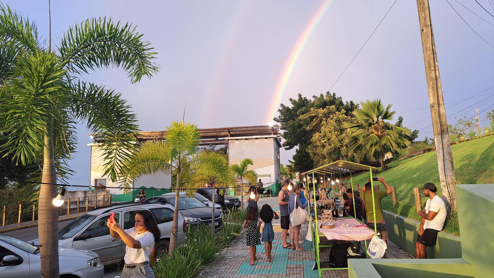
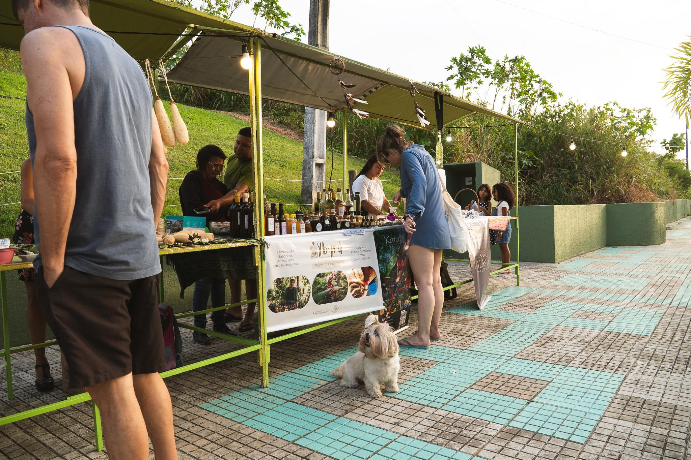
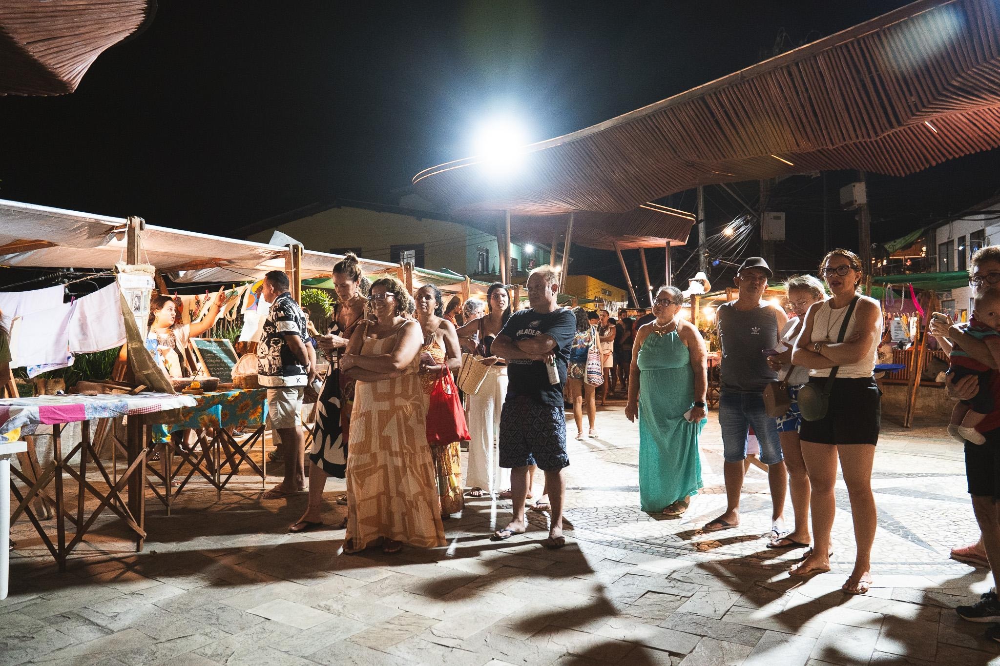

Praia de Pipa · Tibau do Sul
Mais que uma feira,
um movimento.
Um encontro de pessoas, saberes e sabores que fortalece a economia solidária e celebra a comunidade de Pipa.
Conheça a Ecofeira
Feita com a comunidade, para a comunidade.Encontro que transforma
Uma rede que cultiva
vida em comunidade.
A Ecofeira da Pipa é uma associação autogestionada que promove a economia solidária. É espaço para quem produz, cria e compartilha com cuidado — valorizando a cultura local e aproximando pessoas.
25feirantes hoje
21mulheres na feira
4feirantes indígenas
+60famílias já fizeram parte
Números apresentados no material de divulgação da Ecofeira.
Feito por gente da gente
Sabores, criações
e cuidado local.
Cada banca traz um pouco da diversidade e do talento de quem faz parte da feira.
- Produtos agroecológicos e orgânicos
- Alimentos vegetarianos e veganos
- Opções sem lactose e sem glúten
- Artesanato feito por mulheres
- Plantas, cosméticos naturais e terapias
- Livros e saberes populares


Ecofeira Cultural
Cultura viva,
saberes compartilhados.
Música, teatro, capoeira, zambê, literatura e saberes populares fazem da feira um espaço aberto para encontros e celebrações.